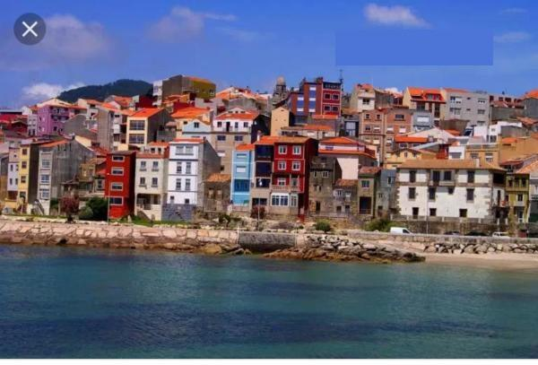
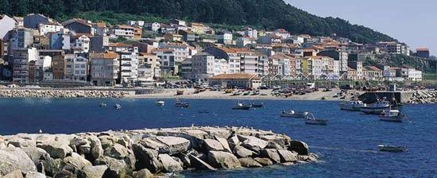

A Guarda
zonas para visitar
🤯
Monte Sangra Tegra
na zona turistica mas importante de galicia. es una zona obligatoria a visitar por sus interesantes valores arqueologicos, religiosos y paisajÃsticos
todo lo que veas aqui es pura ilusion


visita o rosal
portada
visite oia